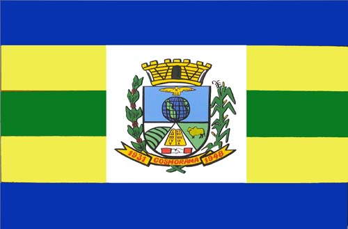

Um pouco de história
Cosmorama é um município do interior do estado de SP,
na região noroeste do estado. A cidade nasceu devido a chegada de imigrantes e pelo desenvolvimento da
agricultura.

Pontos turísticos
A cidade conta com praças, parques de diversão e a Área de Lazer do Trabalhador, lugar dedicado para esportes, pesca, e que conta com quiosques equipados com churrasqueiras construídas pela prefeitura.
Curiosidades
Quando o distrito de Cosmorama foi criado, possuía uma vasta área territorial, abrangendo toda a vertente direita do Rio São José dos Dourados até as barrancas do Rio Paraná e do Rio Grande.

Por
Assembleia Legislativa do Estado de São Paulo - https://www.al.sp.gov.br/alesp/documento-historico/?idDocumento=41995,
Domínio público, Hiperligação